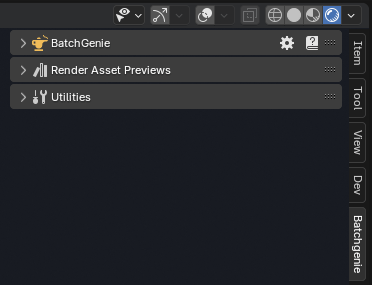

Getting Started
To get started, you have two options: Watch the introductory video guide below for a step-by-step walkthrough of the basics, or follow the written documentation on this site.
Video Introduction¶
- 00:00 Introduction
- 02:00 Importing Textures
- 10:00 Rendering Previews
- 15:00 Utilities
Installation¶
To start using BatchGenie, you need to install the add-on in Blender. Follow these steps:
- Download the BatchGenie add-on zip file from the store you purchased it from.
- Open Blender and go to
Edit > Preferences. - In the Preferences window, navigate to the
Add-onstab. - Locate the
Add-ons Settings( icon) in the top right corner. - Click on
Install from Diskand select the downloaded BatchGenie zip file. - Once installed, enable the add-on by checking the box next to BatchGenie in the add-on list. [WIP]
Updates
BatchGenie respects your privacy. It operates offline and does not collect any data. Therefore, there is no auto-update functionality within the add-on. For updates, simply download the updated add-on manually from the store where you purchased it, uninstall the old version and reinstall the new using the same steps outlined in the instructions above.
Finding BatchGenie and Using the Documentation¶
BatchGenie is located in the N-Panel inside the 3D Viewport under a tab named BatchGenie, as shown in the image below. Alternatively, you can place it under the Tool tab by changing this setting in the Preferences.

All features include hover-over tooltips for quick details within the add-on. Some areas also have an extra information icon, which opens a popup with additional information and a link to the relevant section of the documentation for further instructions. For more comprehensive guidance, you can access the full documentation by clicking the icon in the BatchGenie main panel.